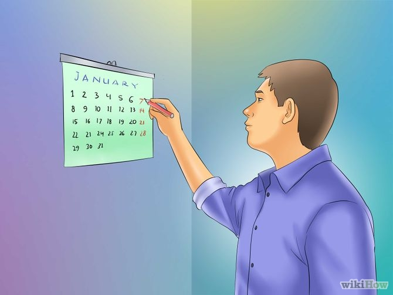
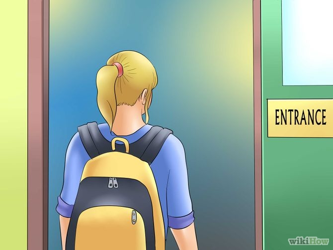
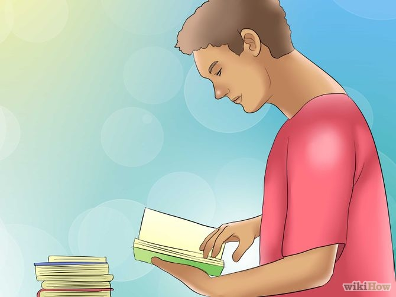
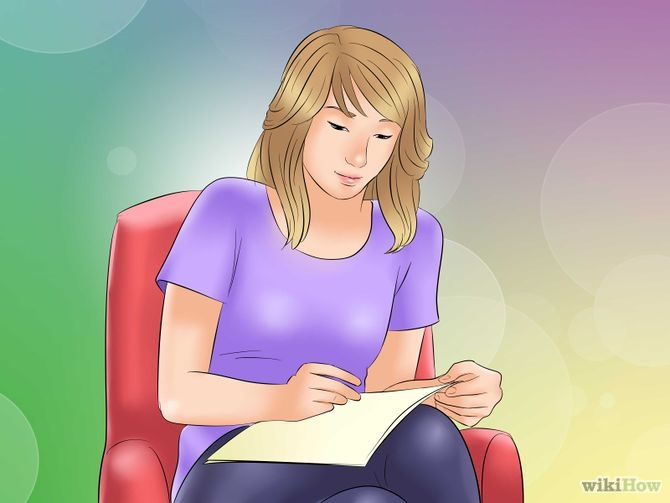

How to Get Good Grades at University
Students who achieved good grades in high school often do badly when they reach university. About 1 in 3 fail out of first year university. Follow these simple steps and that will not happen to you.
Steps

- Make a schedule to complete papers on time. Students typically attend 5 courses over a 12 week term. Most courses have a term paper and final exam as primary bases for assessment. The term papers are usually due about week 10. So students write 5 papers over 10 weeks. Make a schedule at the beginning of term that shows when each paper will be researched and written and follow it. Best sources to use for papers are academic journal articles. They are more focused and therefore much easier to absorb than book length studies. 
- Attend the seminars. Seminar participation grades may only be 10-15% of the final grade, but cutting seminars means a reduction of about 1.5% for each one missed so missing 3 can bring the mark down a grade. Some instructors do not give credit to students who remain silent in a seminar. Reading the assigned text and having something to say about it during a seminar is important. Experienced instructors can readily detect "bullshit" comments from students who have not read the seminar text.
- Attend the lectures. Even if lectures provide copies of lecture PowerPoints and other materials on the web, skipping lectures impacts on the quality of answers students write in the final exam. 
- Do all required readings before or after lectures, so you understand the material. Understanding the material is everything. It helps with tests, homework, and pretty much everything
- DO NOT procrastinate! Don't leave your assignments till the day before they're due, you will rush through and probably get a much lower mark than if you started before. Plus, having extra days lets you have more editing days. 
- Always proofread or get a peer to proofread your work multiple times. Make sure you used proper grammar, cited your sources, and had a good theme for essays.


Tips
-
Plagiarism is a serious academic offence. Instructors now have access to web tools that make it much easier to detect papers that have been submitted before or purchased from essay writing services (which may sell the same paper twice despite assurances to the contrary)
Warnings
-
Overactive social life is the main cause for student failure. Two 12 week terms amount to 24 weeks a year out of 52 weeks. Best to socialize in the 28 weeks of the year out of term and mostly focus on study in term.